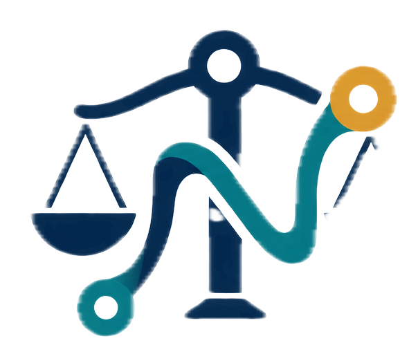

Matters & cause lists
Manage parties, status history, hearings, tasks, notes, assignees, and matter-level access. Detect same-advocate overlaps and travel-buffer conflicts without auto-reassignment.

NyayaFlowProduct overview · September 2026
Legal operations, under firm control
NyayaFlow brings matters, hearings, secure documents, staff access, privacy workflows, and accountable internal operations into one responsive workspace for Indian law firms.
The product
NyayaFlow is built around a simple principle: firm data, human review, and clear provenance come first. Court data is manual at launch; the platform labels source freshness honestly and preserves the context behind decisions.
Manage parties, status history, hearings, tasks, notes, assignees, and matter-level access. Detect same-advocate overlaps and travel-buffer conflicts without auto-reassignment.
Upload private PDF, JPEG, PNG, and TIFF files into quarantine. Immutable versions, malware scanning, English/Hindi OCR, page confidence, corrections, search, and fresh download authorization stay linked.
Argon2id credentials, mandatory TOTP MFA, roles, restricted-matter grants, sessions, consent, retention, legal holds, and hash-chained audit events work together at the data layer.
Filing, contracts, client collaboration, billing, and analytics support internal preparation, review, approval, and manual records—without pretending to be connected to external systems.
Product landscape